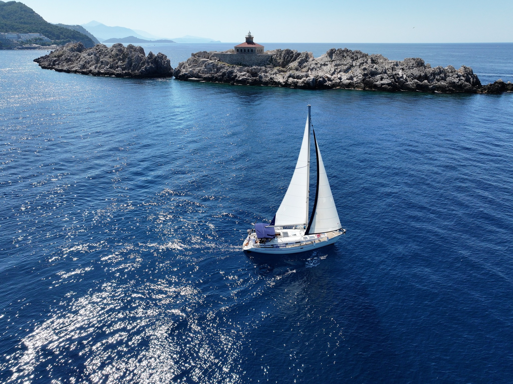

01 / PRIVATEYOUR BOAT. YOUR PEOPLE. YOUR RHYTHM.
Private Tours
A yacht day for one family, one group of friends or one special occasion. Choose the pace, the swim stops, the music and the places you want to remember.
Ask about a private day ↗